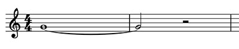

Notions +
1. Liaison
C'est un signe qui lie deux notes de même hauteur afin de prolonger la durée de la première de la valeur de la seconde.
Exemple :
Dans cet exemple, la note dure le temps d'une ronde + une blanche.
On l'utilise lorsque l'on doit écrire une durée de note qui n'existe pas (image de dessous) ou lorsque la durée d'une note se prolonge sur la mesure suivante (image du dessus).
Nuances
Point d'orgue
Barres de reprise
Cadres de reprise
Autres notions de répétition
Accents
Crescendo, decrescendo
Arpèges
Annacrouse